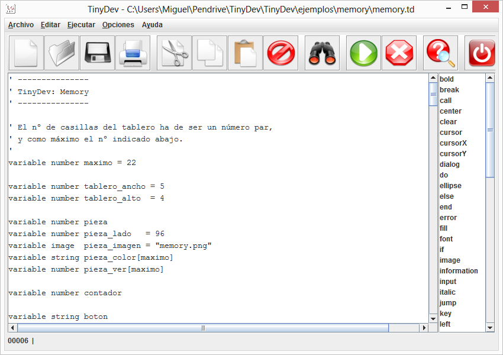
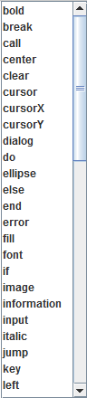
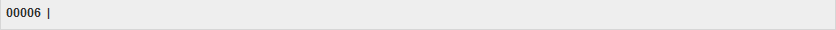

TinyDev v1.01 - 24 Apr 2022
© 2017 - 2022 Miguel I. García López (FloppySoftware)
Todos los derechos reservados.
Introducción
El menú Archivo
El menú Editar
El menú Ejecutar
El menú Opciones
El menú Ayuda
El área de edición
Los botones de acceso rápido
El área del lenguaje
El área del información
Introducción
Instrucciones
Funciones
Comentarios
Identificadores
Expresiones
Números
Cadenas de texto
Imágenes
Sonidos
Colores
Places
Variables
Arrays
Operadores
Control del flujo de ejecución
Subrutinas
Palabras reservadas en orden alfabético
Palabras reservadas según su función
TinyDev es un lenguaje de programación para niños, creado con el objetivo de enseñarles a pensar en la resolución de problemas.
Aunque es un lenguaje muy completo, ha sido diseñado para que sea sencillo de utilizar, huyendo de las complicaciones y dificultades de ciertos lenguajes de programación para niños, muy en boga actualmente.
Mediante TinyDev, los niños pueden dibujar gráficos, escribir texto, mover imágenes por la pantalla, emitir sonidos, e interactuar con el usuario mediante el teclado y el ratón.
Además, se acompaña de un pequeño IDE (Integrated Development Environment, Entorno de Desarrollo Integrado), mediante el cual los niños pueden crear, editar y ejecutar sus programas, tal y como ocurre con los lenguajes de programación profesionales.
El IDE (Integrated Development Environment, Entorno de Desarrollo Integrado) de TinyDev ha sido diseñado para parecerse y actuar como los que acompañan a los lenguajes de programación profesionales, aunque teniendo en cuenta el tipo de usuarios al que va destinado.
Tiene las funciones características de este tipo de entornos, entre ellas:
Mediante las opciones de este menú, podemos realizar las operaciones frecuentes con archivos que contengan código fuente para el lenguaje TinyDev: Nuevo, Abrir, Guardar, Guardar como e Imprimir.
También está disponible la opción Salir, para abandonar el IDE.
En este menú, se encuentran las opciones habituales de edición de texto: Cortar, Copiar, Pegar, Eliminar y Seleccionar todo. Estas funciones también están disponibles si se pulsa el botón derecho del ratoón, dentro del área de edición de texto.
También incluye las opciones de búsqueda de texto.
Mediante las opciones de este menú, podemos controlar la ejecución del programa cargado en el IDE: Ejecutar y Detener.
En este menú, se encuentran las opciones de configuración del IDE: Mostrar consejo al iniciar y Utilizar la plantilla para nuevos archivos.
La plantilla para nuevos archivos, se llama TinyDev_es_ES.km, y puede ser personalizada, a gusto del usuario.
Mediante las opciones de este menú, podemos acceder a la ayuda e información de TinyDev: Ver la ayuda y Acerca de TinyDev.
En el área de edición, es donde podemos escribir las líneas que componen los programas.
Pulsando el botón derecho del ratoón, dentro del área, aparecerá un menú con algunas opciones de edición de texto: Cortar, Copiar, Pegar, Eliminar y Seleccionar todo.
La barra de botones, permite el acceso rápido a las funciones más habituales del IDE.
Si se deja el cursor del ratón sobre un botón, aparecerá un pequeño texto explicativo sobre la función que realiza.
En este panel, podemos encontrar todas las palabras clave del lenguaje de programación de TinyDev.
Para introducir una palabra clave en el texto utilizando este panel, basta con pulsar el botón izquierdo del ratón, con el cursor encima de ella.

En este panel, aparece información acerca del texto que estamos editando, el número de línea actual, mensajes explicativos, etc.

En TinyDev, cada línea de texto, es una instrucción, un place, un comentario, o una líne en blanco.
Una instrucción, está compuesta por su nombre y, en la mayoría de los casos, unas opciones, separadas entre sí, por uno o más espacios en blanco, y unos parámetros, separados entre sí, por una coma, que puede estar seguida de uno o más espacios en blanco:
Set tablero[casilla] = 2 Screen 400, 200
Los parámetros, suelen ser expresiones, de texto, numéricas...
Set total = cantidad * 10 + beneficio Screen tablero_ancho * pieza_lado, tablero_alto * pieza_lado
Una función, se diferencia de una instrucción, en que ha de emplearse obligatoriamente como parámetro, o en la construcción de expresiones. Sus parámetros, son indicados entre paréntesis, separados entre sí por una coma, que puede estar seguida de uno o más espacios en blanco:
Print Center "¡Has ganado " + string(cuantos) + " puntos!" Variable String segundoNombre = Middle(nombre, 5, 6)
Los comentarios, son muy útiles para explicar qué hace un determinado fragmento de código del programa.
Se escriben anteponiéndoles el caracter apóstrofe '.
Todo lo que haya a continuación del apóstrofe en la línea, será ignorado.
De esta forma, podemos escribir comentarios que ocupen toda la línea:
' Esto es un comentario
o al final de la misma:
Call Title ' Esto es un comentario
Los identificadores se utilizan para dar nombre a las variables y los places.
Un identificador, debe empezar por una letra, seguida opcionalmente de cualquier combinación de letras, números y el caracter de subrayado _.
No se distinguen entre mayúsculas y minúsculas, por lo que los identificadores nombreCompleto y nombrecompleto, referencian al mismo identificador.
Algunos identificadores válidos son: myName, year1969, house_color.
Estos identificadores no son válidos: 45 (no empieza con una letra), $name (no empieza con una letra), my/home (el carácter / no es válido), 6years (no empieza con una letra).
Una expresión, es una operación que devuelve un resultado de un tipo determinado:
Un número puede ser negativo: -56, o positivo: 25, pero no están permitidos los decimales.
Una expresión numérica, es una expresión cuyo resultado es un valor numérico. Ejemplos:
50 precio * 10 (5 + lado) * 6 total - descuento
Para crear una variable que contenga un número, se ha de utilizar la palabra reservada Variable.
Se puede alterar el valor de una variable numérica con Set:
Variable Number precio = 50 Variable Number total Set total = precio * 3 Print "El total es: " + String(total) + " euros"
En este caso, la salida sería:
El total es: 150 euros
Se puede convertir un valor numérico en su equivalente textual, con String:
Variable Number edad = 5 Variable String texto Set texto = String(edad)
Una cadena de texto, ha de estar entrecomillada: "Esto es una cadena".
Una expresión de texto, es una expresión cuyo resultado es un valor de texto. Ejemplos:
"Hola" "Hola " + nombre "El apellido de " + nombre + " es " + apellido
Para crear una variable que contenga un valor textual, se ha de utilizar la palabra reservada Variable.
Se puede alterar el valor de una variable de tipo texto, con Set:
Variable String nombre = "Juan" Set nombre = nombre + " Serrano" Print nombre
En este caso, la salida sería:
Juan Serrano
Se puede convertir un valor textual, en su equivalente numérico, con Number:
Variable Number edad Dialog Input "Introduce tu edad" Set edad = Number(Reply())
Los tipos de ficheros admitidos para las imágenes, son los que mismos que admite el lenguaje Java: bmp, jpg, png, etc.
Una expresión de tipo imagen, es una expresión cuyo resultado es un valor textual, o bien una referencia a una variable de tipo imagen. Ejemplos:
Variable String tipoImagen = ".png" Variable Image fotoUno = "foto1" + tipoImagen Variable Image mismaFoto = fotoUno
Para crear una variable de este tipo, has de utilizar la palabra reservada Variable.
Se puede alterar el valor de una variable de este tipo, con Set:
Variable Image icono Set icono = "flor.png"
El tipo de fichero admitido para los sonidos, es wav.
Una expresión de tipo sonido, es una expresión cuyo resultado es un valor textual, o bien una referencia a una variable de tipo sonido. Ejemplos:
Variable String tipoSonido = ".wav" Variable Sound efectoSonido = "crash" + tipoSonido Variable Sound mismoSonido = efectoSonido
Para crear una variable de este tipo, has de utilizar la palabra reservada Variable.
Se puede alterar el valor de una variable de este tipo, con Set:
Variable Sonido efectoSonido Set efectoSonido = "crash.wav"
Los colores se indican mediante expresiones textuales: black, blue, cyan, light_gray, gray, dark_gray, magenta, orange, pink, red, white, yellow y green.
Ejemplo:
Pen "black" Paper "red" Print "Texto de color negro, sobre fondo de color rojo."
Los places, son posiciones o lugares en el código del programa, señalados mediante un identificador, y el caracter de dos puntos:
Ejemplo:
CentraTexto:
Son utilizados para cambiar el flujo de ejecución del programa, mediante la utilización de las instrucciones Call y Jump.
Hay disponibles 4 tipos de variables:
| Tipo | Valor |
|---|---|
| Number | Números |
| String | Cadenas de texto |
| Image | Imágenes |
| Sound | Sonidos |
Las variables, se crean con la instrucción Variable, y su valor se modifica con Set:
Variable String nombreCompleto = nombre + apellidos Variable Image icono = "flor.png" Variable Number precio Variable Sound sonidoClick = "click.wav" Set precio = 5
Los arrays, son grupos de datos del mismo tipo.
Se crean con Variable, y su valor se modifica con Set.
La cantidad de datos (o tamaño) del array, es fijo, por lo que una vez creado, no se puede cambiar.
Para referirse a cada elemento del array, se indica su nº de índice, que va de 0, a tamaño - 1.
Por ejemplo:
' Crea un array de 10 números: ' Variable Number precio[10] ' ' Asigna un valor al 1er elemento, ' y al último: ' Set precio[0] = 10 Set precio[9] = 50 ' ' Suma los 2 valores y los presenta ' en pantalla: ' print "Suma: " + String(precio[0] + precio[9])
Hay varios tipos de operadores, con distinto nivel de precedencia, que se pueden usar en las expresiones:
| Nivel | Operadores | Orden de evaluación |
|---|---|---|
| 1 | [] Acceso a elemento de un array () Paréntesis |
De izquierda a derecha |
| 2 | * Multiplicación / División % Módulo |
De izquierda a derecha |
| 3 | + Suma o concatenación - Resta |
De izquierda a derecha |
| 4 | == Igual != Distinto > Mayor que >= Mayor o igual que < Menor que <= Menor o igual que |
De izquierda a derecha |
| 5 | && Y lógico || O lógico |
De izquierda a derecha |
Para acceder a un elemento de un array, se utilizan los corchetes:
Variable Image iconos[5] ' Crear un array de 5 imágenes (índices del 0 al 4) Set iconos[0] = "abrir.png" ' Asignamos una imagen al 1er elemento
Los paréntesis, son utilizados para cambiar el orden de evaluación en las expresiones, o hacerlas más legibles:
Set importe = (precio + recargo) * unidades
El operador +, puede ser utilizado, además de para sumar dos expresiones numéricas, para concatenar dos expresiones textuales:
Variable nombre = "Julio" Variable apellidos = "Lóopez Blanco" Variable nombreCompleto = nombre + " " + apellidos
Los operadores relacionales, son utilizados para comparar 2 expresiones del mismo tipo (numéricas o textuales):
Variable String nombre Dialog Input "Dime tu nombre:" Set nombre = Reply() If nombre == "José" Then Print "¡Hola, Pepe!"Otro ejemplo:
Set counter = 0 Do Print String(counter) Loop While counter < 5
Los operadores lógicos, son utilizados para combinar el resultado de 2 comparaciones:
Variable String nombre = "Marta" Variable Number edad = 58 If edad > 50 && nombre == "Marta" Then Print "¡Hola, abuelita!"
Se puede alterar el orden de ejecución de las instrucciones del programa, utilizando Call y Jump.
Además, contamos con los bucles y la instrucción condicional If.
Para utilizar Call y Jump, necesitamos crear places:
Call GameOver End GameOver: Print "***GAME OVER***" Return
Mediante Return, volveremos a ejecutar las instrucciones que estén después del Call que llamó al place.
Este sistema, es muy útil para crear subrutinas:
Print "Lunes" + Break() Call Martes Print "Miércoles" + Break() Jump Viernes Print "Jueves" + Break() Viernes: Print "Viernes" + Break() End Martes: Print "Martes" + Break() Return
La salida sería:
Lunes Martes Miércoles Viernes
Como se puede observar, el texto Jueves no ha sido impreso.
La instrucción End termina el programa.
Una subrutina, es un fragmento de código, que comienza en un place, que se ejecuta mediante la instrucción Call.
Mediante la instrucción Return, volveremos a ejecutar las instrucciones que siguen al Call que llamó a la subrutina.
Son muy útiles, para organizar el código del programa, de una forma más lógica y ordenada, así como para partes del programa, que sean frecuentemente utilizadas.
Es conveniente utilizar comentarios, que describan lo que hacen, y qu´ variables necesitan o modifican, etc.:
Variable String texto Variable Number y Set texto = "¡Hola mundo!" Set y = 100 Call TextoCentrado Set texto = "¡Hasta luego!" Set y = 150 Call TextoCentrado End ' Imprime un texto centrado en la ventana, en rojo, con fondo blanco. ' La variable 'texto', contiene el texto a imprimir. ' La variable 'y', contiene la posición Y de la pantalla (la fila). ' TextoCentrado: Pen "red" Paper "white" Cursor To 0 y Print Center texto Return
Creación y manipulación de variables:
Control del flujo de ejecución:
Break
Call
Do
Else
End
If
Jump
Loop
Return
Gráficos, imágenes e impresión de texto:
Clear
Cursor
CursorX
CursorY
Dialog
Ellipse
Font
Image
Line
Paper
Pen
Point
Print
Rectangle
Screen
ScreenHeight
ScreenWidth
TextHeight
TextWidth
Entrada de datos por el teclado:
Sonidos:
Control del ratón:
Manipulación de cadenas de texto:
Break
Findstring
Length
Lowercase
Middle
Number
Repeatstring
String
Uppercase
Otros:
Instrucciones:
Break
Call
Clear
Cursor
Dialog
Do
Ellipse
Else
End
Font
If
Image
Jump
Line
Loop
Paper
Pen
Point
Print
Random
Rectangle
Return
Screen
Set
Sound
Variable
Wait
Funciones:
Break
CursorX
CursorY
Key
Findstring
Length
Lowercase
Middle
MouseClick
MouseX
MouseY
Number
Paper
Pen
Random
Repeatstring
Reply
ScreenHeight
ScreenWidth
String
TextHeight
TextWidth
Uppercase
Otras palabras reservadas auxiliares, utilizadas conjuntamente con las anteriores, son:
Bold, Center, Error, Fill, Information, Input, Italic, Left, OkCancel, Plain, Right, Solid, Then, To, Transparent, Until, Warning, While, YesNo.
Variable Number contador = 0 Do Dialog YesNo "Ahora el contador vale " + String(contador) + Break() + "¿Quieres salir del bucle ya?" If Reply() == "yes" Then Break Loop While contador < 10
Como función, devuelve un código de nueva línea, útil en las instrucciones Print y Dialog:
Print "Esto es una línea." + Break() + "Y esto otra."
Continuar la ejecución de las instrucciones del programa, a partir del place indicado.
Una vez se encuentre la instrucción Return, la ejecución continuará en la instrucción que sigue al Call que llamó al place.
Se suele utilizar en las subrutinas:
Image 10, 10, coheteUno
Call Pausa
Image 10, 10, coheteDos
Call Pausa
End
Pausa:
Wait 600
Return
Borra la ventana, con el color de fondo actual, y sitúa el cursor en la esquina superior izquierda de la misma (x = 0, y = 0):
Screen 300, 300 Paper "blue" Clear
Mueve el cursor a la posición indicada.
Tanto x, como y, son expresiones numéricas:
Cursor To 10, 10
Devuelve la posición X actual del cursor:
Cursor To CursorX(), 10
Devuelve la posición Y actual del cursor:
Cursor To 0, CursorY()
Visualiza un cuadro de diálogo del tipo especificado, e imprime el mensaje de texto indicado:
| Tipo | Funcionalidad | Devuelve el dato en Reply() |
|---|---|---|
| Input | Solicita un dato al usuario | Sí |
| YesNo | Hace una pregunta al usuario, y devuelve "yes" o "no" | Sí |
| OkCancel | Hace una pregunta al usuario, y devuelve "ok" o "cancel" | Sí |
| Warning | Informa de una advertencia | No |
| Error | Informa de un error | No |
| Information | Muestra una información | No |
Los datos introducidos, se pueden recuperar mediante la función Reply():
Variable String nombre Variable Number edad Variable Number helado = 0 Dialog Input "Dime tu nombre:" Set nombre = Reply() Dialog Input "Dime tu edad, " + nombre + ":" Set edad = Number(Reply()) Dialog YesNo "¿Te gustan los helados?" If Reply() == "yes" Then Set helado = 1
Ejecuta una serie de instrucciones dentro de un bucle, mientras se cumpla la condición (While), o hasta que se cumpla (Until).
Las 2 primeras formas, comienzan a ejecutar las instrucciones contenidas dentro del bucle, y luego evalún la condición antes de proseguir, por lo que siempre ejecutan dichas instrucciones, al menos una vez.
Las otras 2 formas, evalún la condición al principio del bucle, por lo que puede que no ejecuten nunca las instrucciones, si dicha condición no se cumple.
Veamos un ejemplo:
Do Dialog YesNo "¿Deseas continuar dentro del bucle?" Loop While Reply() == "yes"
Otro ejemplo más:
' Imprimir los números del 1 al 10 ' Variable Number contador = 1 Do Print String(contador) + Break() Set contador = contador + 1 Loop Until contador == 10
Dibuja una elipse (o un círculo, si ancho y alto son iguales).
Los valores x, y, ancho y alto, son expresiones numéricas, que indican la posición más a la izquierda, la posición más arriba, el ancho en pixels, y el alto en pixels, respectivamente.
El modo de operación es opcional.
| Modo | Efecto |
|---|---|
| Dibuja sólo el contorno, con el color de pluma | |
| Fill | Dibuja el contorno, con el color de pluma, y rellena el interior, con el color de papel |
| Solid | Dibuja una figura sólida, con el color de pluma |
Veamos un ejemplo:
' Dibuja un círculo de 100 pixels de diámetro, ' con el contorno de color negro, y el interior de color rojo Pen "black" Paper "red" Ellipse fill 25, 50, 100, 100
Ejecuta las instrucciones siguientes, si la condición evaluada en el anterior If era falsa.
En caso contrario, no las ejecuta.
Se utiliza Else sin argumentos, cuando se trata de un bloque If:
If edad >= 18 Then Print "Mayor de edad" Set mayorDeEdad = 1 Else Print "Menor de edad" Set mayorDeEdad = 0 End If
Los Else de bloque, también admiten la forma Else If:
If numero == 0 Then Print "0" Else If numero == 1 Then Print "1" Else If numero == 2 Then Print "2" Else Print "?" End If
Se utiliza un Else simple, cuando se
trata de un If simple:
If edad >= 18 Then Print "Mayor de edad"
Else Print "Menor de edad"
Los Else simples, también admiten la forma Else If simple:
If numero == 0 Then Print "0" Else If numero == 1 Then Print "1" Else If numero == 2 Then Print "2" Else Print "?"
Importante: No está permitido mezclar distintos tipos de If y Else (sólo simples, o sólo de tipo bloque).
La instrucción End finaliza el programa:
Dialog YesNo "¿Deseas jugar otra partida?" If Reply() == "no" Then End Jump partidaNueva
También se utiliza la forma End If, para finalizar un If de tipo bloque:
If Reply() == "no" Then Clear Print "¡Hasta luego!" End If
Devuelve la posición de la primera aparición de texto-a-buscar en texto, a partir de la posición indicada, o -1 si no es encontrado.
Tanto texto-a-buscar, como texto son valores textuales.
Si no se indica el argumento posición, busca a partir de la primera posición. La primera posición es 0.
Variable String nombre = "Juan Miguel Llamas" print string(findstring(nombre, "Miguel")) ' 5
Cambia la fuente actual, su tamaño y los atributos.
El valor nombre es una expresión textual, que indica el nombre de la fuente, y tamaño es una expresión numérica, que indica su tamaño en puntos.
Los atributos permiten cambiar las características que indica la tabla.
| Atributo | Efecto |
|---|---|
| Plain | Texto normal sin atributos |
| Bold | Texto en negrita |
| Italic | Texto en cursiva (itálica) |
| Transparent | Fondo transparente (no rellena con el color de papel |
Sólo se modificarán las características que se indiquen, pero en el caso de indicar alg&uactue;n atributo, todos los demás se desactivarán;n:
Font "arial" Font 32, Bold Font "verdana", Bold, Italic
Ejecuta las instrucciones siguientes, si la condición es cierta.
Puede ser utilizado conjuntamente con Else.
Hay dos tipos de If.
De tipo bloque, finalizados con End If:
If edad >= 18 Then Print "Mayor de edad" Set mayorDeEdad = 1 Else Print "Menor de edad" Set mayorDeEdad = 0 End If
Y de tipo simple:
If edad >= 18 Then Print "Mayor de edad"
Else Print "Menor de edad"
Importante: No está permitido mezclar distintos tipos de If y Else (sólo simples, o sólo de tipo bloque).
Dibuja la imagen en la posición indicada por x e y, ambas, expresiones de tipo numérico.
La imagen se indica mediante una expresión de imagen:
Variable Image icono = "estrella.png" Image 10, 15, icono
Cambia el flujo de ejecución del programa, ejecutando las instrucciones a partir del place indicado:
' Imprimir: Hola Pepe Print "Hola " Jump imprimeC print "Juan" imprimeC: print "Pepe"
La salida en pantalla sería:
Hola Pepe
Devuelve el nombre de la tecla o caracter pulsado por el usuario, como una cadena de texto.
En el caso de que el usuario no haya pulsado ninguna tecla,
devolverá una cadena vacía "":
Variable String tecla
pulsaTecla:
Set tecla = Key()
If tecla == "up" Then Call mueveArriba
If tecla == "down" Then Call mueveAbajo
Jump pulsaTecla
Veamos otro ejemplo:
' Subrutina que espera a que se pulse ' cualquier tecla. ' El valor de la tecla se pierde. ' esperaTecla: Do Until Key() != "" ' Nada Loop Return
El caracter o tecla es borrado del buffer de teclado, en cuanto es leído.
Los nombres de las teclas (aparte de los caracteres comunes como a, B, 1, 2, 3, etc.),son: up, down, left, right, enter, escape, home, end, page_up, page_down...
Devuelve el nº de elementos de un array, o la longitud en caracteres de una expresión textual:
Variable String nombre = "Juanjo" Variable Number longitud = Length(nombre) ' 6 caracteres Variable Number precios[5] Variable Number elementos = Length(precios) ' 5 elementos
Dibuja una línea con el color de pluma, desde la posición indicada por x e y, hasta la posición indicada por x2 e y2.
Dichas posiciones, son expresiones numéricas:
Pen "red" Line 10, 15, 300, 250
Instrucción de cierre de un bucle Do:
' Subrutina que espera a que se pulse cualquier tecla. ' Devuelve el valor en la variable textual 'tecla'. ' esperaTecla: Do Set tecla = Key() Loop While tecla == "" Return
Convierte una expresión textual a minúsculas:
Print Lowercase("SOY Pequeñito") ' soy pequeñito
Devuelve un valor textual, extraído de texto, a partir de la posición índice, de la longitud en caracteres indicada.
El primer índice es el 0.
Variable String nombre = "Juan Miguel" Variable String segundoNombre = Middle(nombre, 5, 6) ' Extraemos "Miguel"
Devuelve el botón del ratoón que ha sido pulsado, como un valor textual, según indica la tabla.
| Valor | Significado |
|---|---|
| "" | Ningún botón pulsado |
| "left" | Botón izquierdo |
| "middle" | Botón central |
| "right" | Botón derecho |
Veamos un ejemplo:
Variable String boton = MouseClick() If boton == "left" Then Print "Izquierdo" Else If boton == "right" Then Print "Derecho"
Devuelve la posición x del puntero del ratón, como un valor numérico:
Variable Number posX = MouseX()
Devuelve -1, si el puntero del ratón está fuera de la ventana.
Devuelve la posición y del puntero del ratón, como un valor numérico:
Variable Number posY = MouseY()
Devuelve -1, si el puntero del ratón está fuera de la ventana.
Convierte una expresión textual, en su equivalente numérico:
Variable Number valor = 3 + Number("45")
Si la expresión textual no tiene equivalente numérico, devuelve el valor 0.
Como instrucción, cambia el color de papel:
Paper "red" Clear
Como función, devuelve el color de papel actual:
Paper "Blue" Print "Texto escrito sobre fondo de color: " + Paper()
Como instrucción, cambia el color de pluma:
Pen "Blue" Paper "Yellow" Print "Texto escrito en color azul, sobre fondo amarillo"
Como función, devuelve el color de pluma actual:
Pen "Blue" Print "Texto escrito en color: " + Pen()
Dibuja un pixel con el color de pluma, en la posición indicada por x e y, ambos indicados como expresiones numéricas:
Pen "green" Point 10, 40
Imprime el texto indicado en la pantalla.
El modo, tiene el efecto indicado en la tabla.
| Modo | Efecto |
|---|---|
| Imprime en la posición actual del cursor | |
| Left | Texto justificado a la izquierda, en la posición y actual |
| Center | Texto centrado, en la posición y actual |
| Right | Texto justificado a la derecha, en la posición y actual |
Veamos un ejemplo:
Variable String nombre = "Pepe" Variable Number edad = 15 Print "El alumno " + nombre + ", tiene " + String(edad) + " años de edad." + Break()
La primera forma, indica el nº máximo que generará la segunda.
La segunda forma, es una función, que devuelve un nº aleatorio entre 0 y máximo, ambos inclusive.
El valor máximo, es una expresión numérica:
Variable Number dato ' Random generará números del 0 al 5, ' ambos inclusive: ' Random 5 ' La variable 'dado' tendrá un valor aleatorio ' entre 1 y 6, ambos inclusive: ' Set dado = Random() + 1
Dibuja un rectángulo (o un cuadrado, si ancho y alto son iguales).
Los valores x, y, ancho y alto, son expresiones numéricas, que indican la posición más a la izquierda, la posición más arriba, el ancho en pixels, y el alto en pixels, respectivamente.
El modo de operación es opcional.
| Modo | Efecto |
|---|---|
| Dibuja sólo el contorno, con el color de pluma | |
| Fill | Dibuja el contorno, con el color de pluma, y rellena el interior, con el color de papel |
| Solid | Dibuja una figura sólida, con el color de pluma |
Veamos un ejemplo:
' Dibuja un cuadrado de 100 pixels de lado, ' con el contorno de color negro, y el interior ' de color rojo: ' Pen "black" Paper "red" Rectangle fill 25, 50, 100, 100
Devuelve un valor textual, resultado de repetir la cadena texto el número de veces indicado.
Variable String nombre = "Abc" Print Repeatstring(nombre + "!", 3) ' Abc!Abc!Abc!
Devuelve el valor introducido por el usuario, mediante la instrucción Dialog, como un valor textual:
Variable String nombre Dialog Input "Introduce tu nombre:" Set nombre = Reply()
Dicho valor puede ser convertido a un valor numérico, mediante la función Number.
Cambia el flujo de ejecución del programa a la siguiente instrucción que sigue al Call, que llamó al place:
Call borraPantalla Print "Game Over" End borraPantalla: Clear Return
Reinicia la ventana, cambiando sus dimensiones a las indicadas, borrando su contenido pintando el fondo de la misma con el color de papel, cambiando los valores de la fuente a sus valores por defecto, y situando el cursor en la esquina superior izquierda de la misma (posición x = 0 e y = 0):
Screen 800, 600 Paper "green" Clear
Devuelve el alto de la ventana, en pixels:
Screen 800, 600 Variable Number alto = ScreenHeight()
Devuelve el ancho de la ventana, en pixels:
Screen 800, 600 Variable Number ancho = ScreenWidth()
Asigna un valor a una variable o elemento de un array.
Los valores admitidos, dependen del tipo de variable.
Para variables de tipo Number, el valor será una expresión numérica:
Variable Number precio 25 Variable Number total Set total = precio * 10 Variable String alumnos[15] Set alumnos[3] = "Pepe"
Para variables de tipo String, el valor será una expresión textual:
Variable String nombre Set nombre = "Miguel"
Para variables de tipo Image, el valor puede ser tanto una expresión textual que referencie el nombre del fichero de imagen, como el nombre de otra variable del mismo tipo:
Variable Image iconoFlor = "flor.png" Variable Image icono Set icono = iconoFlor Image 100 100 icono
Para variables de tipo Sound, el valor puede ser tanto una expresión textual que referencie el nombre del fichero de sonido, como el nombre de otra variable del mismo tipo:
Variable Sound click Set click = "sonido_click.wav"
Convierte una expresión numérica, en su equivalente textual:
Variable Number valor = 5 Variable String texto = String(valor)
Emite el sonido indicado por la expresión de sonido:
Variable Sound sonidoError = "fail.wav" Sound sonidoError
Devuelve la altura de una expresión textual, en pixels:
Variable Number altoEnPixels = TextHeight("Texto de prueba")
Devuelve la anchura de una expresión textual, en pixels:
Variable Number anchoEnPixels = TextWidth("Texto de prueba")
Convierte una expresión textual a mayúsculas:
Print Uppercase("Soy Pequeñito") ' SOY PEQUEÑITO
Crea una variable o array del tipo especificado, y (opcionalmente) le asigna un valor del mismo tipo (sólo para variables).
El tipo, puede ser uno de los indicados en la tabla.
| Tipo | Significado |
|---|---|
| Number | Para variables de tipo numérico |
| String | Para variables de tipo textual |
| Image | Para variables de tipo imagen |
| Sound | Para variables de tipo sonido |
El valor se indica mediante una expresión del tipo correspondiente: numérica, textual, de imagen, o de sonido:
Variable Number edad = 10 Variable Number precio Variable String nombreCompleto = nombre + apellidos Variable Sound sonidoFin = "game_over.wav" Variable Image fondoVentana = "selva.png" Variable String alumnos[50]
Realiza una pausa, de la duración indicada mediante una expresión numérica:
' Parar 1 segundo la ejecución del programa: ' Wait 1000